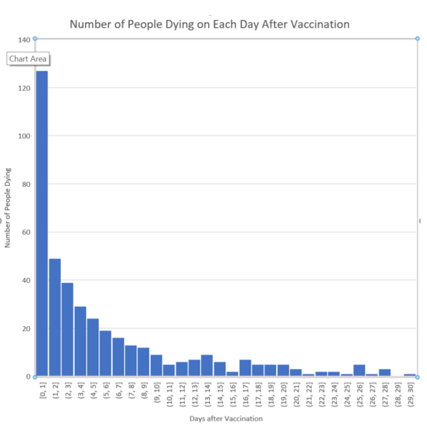
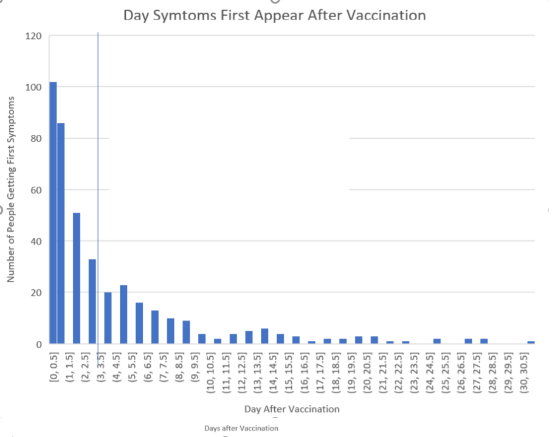

Time from Vaccination to Onset of Adverse Reactions
Batch codes and associated deaths, disabilities and illnesses for Covid 19 Vaccines
home | Booster Warnings by Month | Moderna | Pfizer | Janssen | Moderna (outside USA) | Pfizer (outside USA) | Janssen (outside USA) | Severe | Symptom | Treatment | Children | Clusters | All or Nothing | Time till onset | Gender | Geography | States | Causality | Japan | Sweden | Video Library | Case Reports | Lot Sizes | Lot Expiry Dates | Whistle Blowers | Data Cleaning | Background | Download Source Code | Donate
If this site is slow loading that's because over 1 million people are accessing it right now. Please use auxillary site HowBadisMyBatch.com which has been set up to cope with this overload. Thankyou.
Please consider donation in support of this ongoing work Donate
Immediacy of Severe Reactions
In Febuary of 2021 I looked at 456 deaths that were recorded in VAERS up to that time. It was claimed that these deaths were of very old people who were nearing the end of their lifespan anyway, and consequently that their death had nothing to do with the vaccination they received. If their deaths are completely unrelated to the vaccine then the date of their deaths should be randomly distributed relative to the date of the vaccination. There should be no clustering of death date around the date of the vaccination. So I took a look at the data to see if this was the case...
I published my findings in a document called - Lethal Injection. Here is a graph from that document showing the distribution of deaths following vaccination -

This distribution of deaths is strongly clustered around the vaccination date, showing that the vaccine was a strong contributing cause to their death. A very high proportion of the death occurs the same day as the vaccination. In fact many died within 2 hours of the vaccine being administered !
What About the Onset of Symptoms that led to death?
456 people died, but their death was preceded by symptoms. People never die without symptoms, since there must be some organ failure or damage to produce death. When we look at the date of onset of symptoms, we find that there is an even stronger clustering around the date of vaccination. In 194 cases out of 457, the symptoms that led to death began within 24 hours of the vaccination.
It would have been obvious to the victim that their symptoms and illness began simultaneously with the vaccination, and hence the vaccine was responsible.

What was the cause of their death?
I looked at the patient records for each of the 127 people who died with 24 hours, to find out what they had died from. I gathered together these patient records into the appendix of Lethal Injection. You can read them for yourself. I was surprised that the vast majority died of heart attack.
Pfizer Leak : A document, pryed out of Pfizer using a Freedom of Information Request, describes 1209 serious cardiac events between December 1st 2020 and Feb 28th 2021. Here is the report. In the image below, Pfizer admits that these events occurred up to 21 days after the vaccination, BUT THE MEDIAN is less than 24 hours ! I am just going to repeat that - the MEDIAN is under 24 hours - so most of the adverse reactions followed the vaccinations almost immediately - in many cases the onset of the symptoms leading to their death or disability were apparent within hours, and the fatal or disabling outcome manifest within a single day. It must have seemed obvious to the victims, and to their relatives that the vaccine was the most likely cause. See - Pfizer Leak - see p 16 .
In the light of this information, derived from both VAERS and directly from Pfizer, it is confirmed that most of the adverse events occur within 24 hours of vaccination.
Pfizer's leaked document - what it reveals
Between the 1st of December 2020 and the 28th Febuary 2021, 42,086 reports of adverse reactions were received by Pfizer. Pfizer published the results of these reports in April 2021 - Pfizer Report - see p 16 On page 16, Pfizer lays out a table of the major adverse effects and their time of onset. I invite you to read it for yourself. It may shock you.
| Adverse Effect | Number of cases | % of all cases | Median time till onset |
| Heart Attack | 1406 | 3.30% | < 24 hours |
| Haemorrhage | 932 | 2.20% | 1 day |
| Facial Paralysis | 449 | 1.07% | 2 days |
| Auto-immune illness | 1050 | 2.50% | < 24 hours |
| Arthritis | 3600 | 8.50% | 1 day |
| Convulsions, tremors, seizures | 501 | 1.20% | 1 day |
| Herpes | 8152 | 19.40% | 1 day |
| Blood Clots | 151 | 0.30% | 4 days |
| Stroke | 275 | 0.60% | 2 days |
These illnesses were breaking out in tens of thousands of people within 24 hours of vaccination. The effects were immediate. It was obvious to the victims and to their families that the vaccines were the cause.
Public Health Policy Report - symptoms preceding death
In May 2021, a report was published by Jessica Rose, PhD, MSc, BSc , entitled "A Report on the U.S. Vaccine Vaccine Adverse Events Reporting System (VAERS) of the COVID 19 Messenger Ribonucleic Acid (mRNA) Biologicals
Jessica looked at all those who died, and analysed the time of onset of symptoms that preceded death. On page 69 of this report, Jessica states that -
"70% of all individuals had onset of symptoms within 48 hours following first or second doses."
This is a massive safety signal.
Did the government respond with investigations? Not at all. "Safety" was of no concern to them.
Before and After
Such a striking association in time between the vaccine and associated death or disability should surely have occasioned an investigation, or even a halt of the vaccination roll-out until the issue was solved. But nothing has been investigated, and the roll out has not faltered.
No matter what the explanation is for this association - we must remember that in more than half of the reported events, the severe effect did occur within 24 hours - and stood out because these effects were absent prior to the vaccination. "Onset" is as the word says - "the beginning" of an illness. It wasn't there before. (I think people would have noticed if they had haemorrhages, heart attacks or facial paralysis before the vaccination.)
People Can See the Connection
When people die or become disabled within 24 hours of vaccination, their families notice. The onset of the symptoms leading to their death is often immediate. Common sense tells them there is a connection. They know.
The testimonies of these people is further evidence of the connection between the vaccines and adverse effects.
Latest Analysis December 21st 2021
Of the 9,295 U.S. deaths reported as of Dec. 10, 21% occurred within 24 hours of vaccination, 26% occurred within 48 hours of vaccination and 61% occurred in people who experienced an onset of symptoms within 48 hours of being vaccinated.
These figures are only slightly different from my calculations in February 2021
Created by Craig Paardekooper ©2021